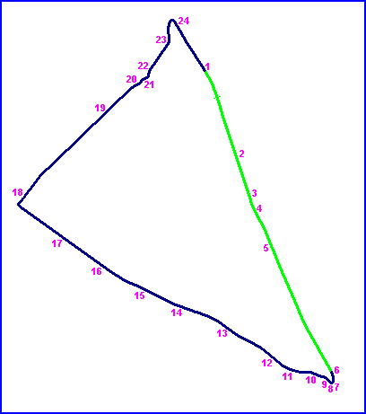

| www.grandprixdetours.com - More information about the 1923 Grand Prix at Tours |
Tours, France
Type: Street CircuitThe circuit consisted of a triangle of over 14 miles of public roads between the towns of La Membrolle and Semblançay, located to the north-west of Tours. The circuit was only used in 1923, hosting the UMF Motorcycle Grand Prix, the Grand Prix de Tourisme for light cars and finally the French Grand Prix, which was won by the Sunbeam of Henry Segrave.
|| Contents | RN158 | La Membrolle | RN159 | D48 | Semblançay || Home ||
Numbers on map indicate where the photos were taken. Click on
hyperlinks above.

Return to racingcircuits.net's Historic Circuits Photo Archive Main Index
Photographs kindly supplied by Chris Hall